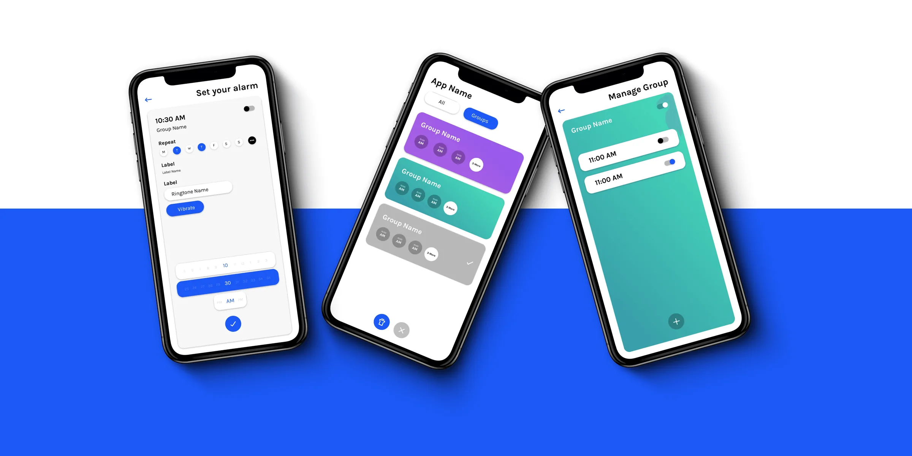

← Case Studies(13 / 14)

Divergent Minds, Convergent Design
Not everyone like's to read to much nowadays (thanks TikTok). See a comic strip?
Timeline2024
RoleUX Researcher
Interviews8
Background Groups4
A short framing
Every UX practitioner has heard the Henry Ford line: "if I had asked people what they wanted, they would have said faster horses." It gets used to justify not listening to users. I wanted to find out whether it actually holds up.
So I ran a study. Eight people across four backgrounds: designers, developers and PMs, artistic non-designers, non-artistic non-designers; all looking at the same two interface screens, while I measured how fast they found problems, how many they found, and what they chose to care about.
The findings surprised me in places. Artistic background mattered more than industry experience. General users weren't blind to design — they simply cared about what a product gave them rather than how it looked. And the industry appears to make designers more critical and, uncomfortably, more conformist.
The full paper follows, unchanged.
View Full Research Paper
Next case studies
View all

(02)
Paytm Insider
0 to 50,000 paying users in one month
Design Systems0→1A/B TestingResearchUX Design
Open